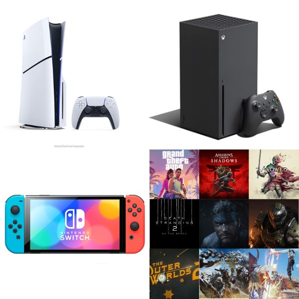
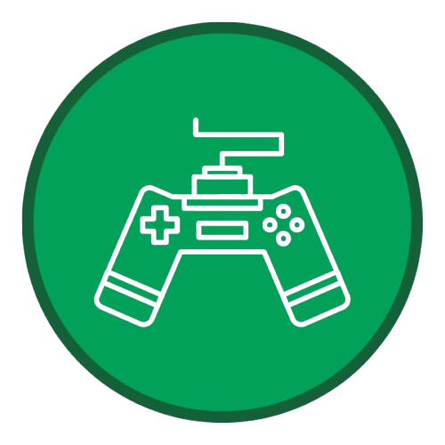

Online games refer to games that are played over some form of computer network, most often the Internet.
Online games can range from simple text-based games to games incorporating complex graphics and virtual
worlds populated by many players simultaneously.

